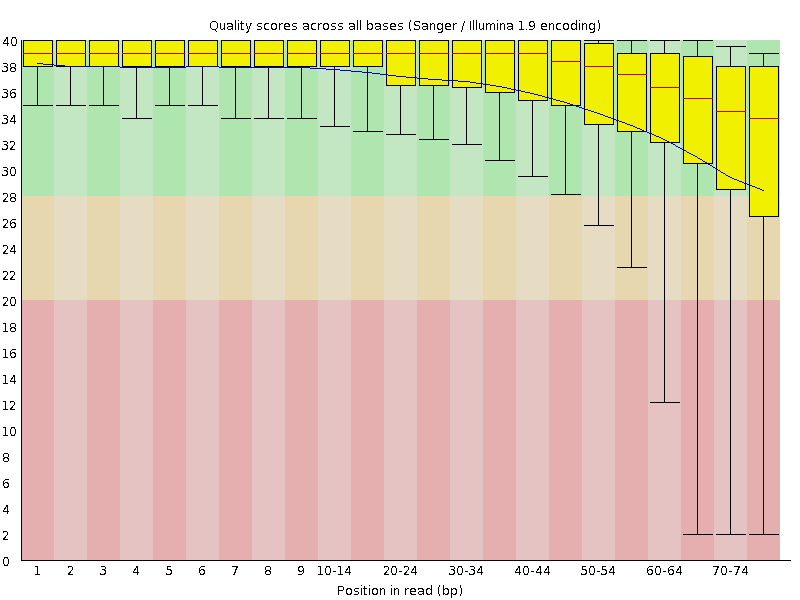
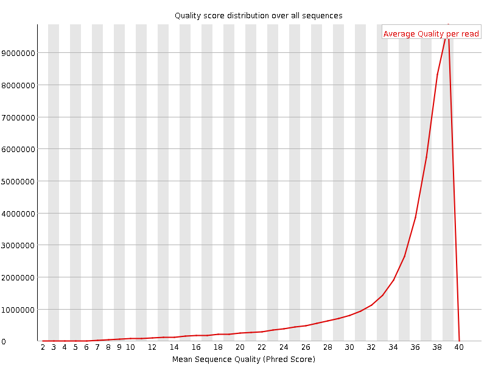
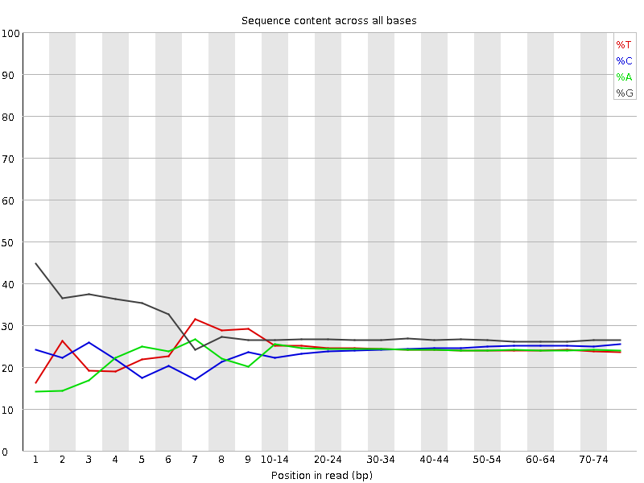
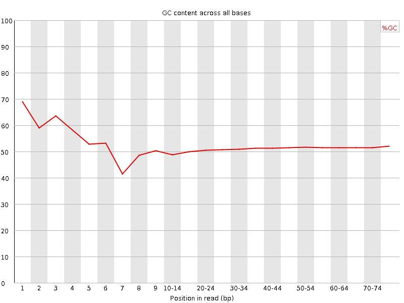
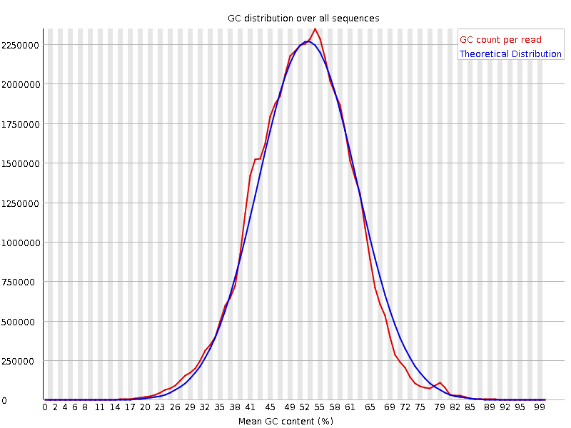
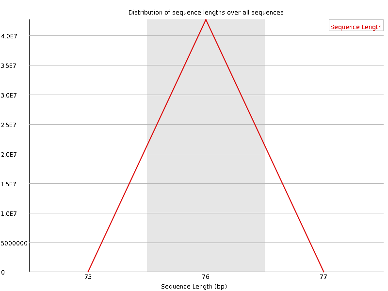
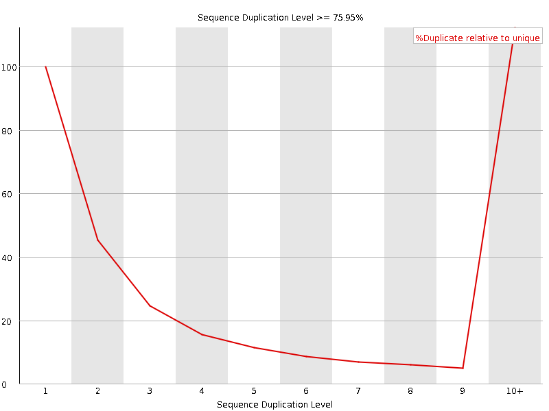
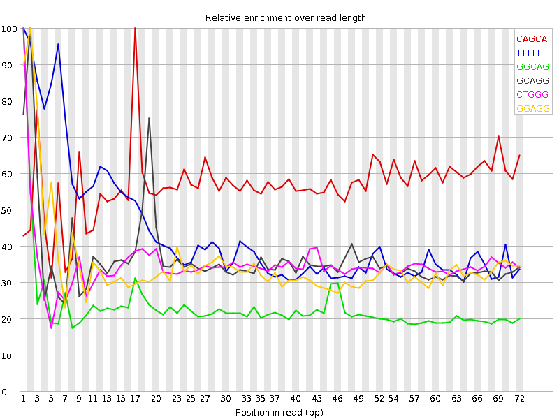

![[OK]](Icons/tick.png) Basic Statistics
Basic Statistics
| Measure | Value |
|---|---|
| Filename | SRR307899_1.fastq |
| File type | Conventional base calls |
| Encoding | Sanger / Illumina 1.9 |
| Total Sequences | 42690836 |
| Filtered Sequences | 0 |
| Sequence length | 76 |
| %GC | 51 |
Per base sequence quality

Per sequence quality scores

![[FAIL]](Icons/error.png) Per base sequence content
Per base sequence content

Per base GC content

Per sequence GC content

Per base N content

Sequence Length Distribution

Sequence Duplication Levels

![[WARN]](Icons/warning.png) Overrepresented sequences
Overrepresented sequences
| Sequence | Count | Percentage | Possible Source |
|---|---|---|---|
| GGCAGACGTTCGAATGGGTCGTCGCCGCCACGGGGGGCGTGCGATCGGCC | 52521 | 0.12302640313719788 | No Hit |
Kmer Content

| Sequence | Count | Obs/Exp Overall | Obs/Exp Max | Max Obs/Exp Position |
|---|---|---|---|---|
| CAGCA | 8118340 | 2.8628306 | 5.013737 | 17 |
| TTTTT | 7371210 | 2.7792833 | 6.402261 | 1 |
| GGCAG | 8045695 | 2.181904 | 9.403104 | 1 |
| GCAGG | 7639855 | 2.0718448 | 5.6660275 | 2 |
| CTGGG | 7565630 | 2.0173147 | 5.775196 | 1 |
| GGAGG | 7979400 | 1.9053084 | 5.440793 | 2 |
| GGGGG | 8891755 | 1.8543996 | 6.912794 | 1 |
| GGGCA | 6650030 | 1.8034151 | 5.6893706 | 1 |
| GGGAA | 6306260 | 1.7240349 | 5.037718 | 1 |
| GGGGA | 6795085 | 1.6225193 | 7.595266 | 1 |
| TGGGG | 6858750 | 1.6102614 | 5.4939075 | 2 |
| GGGAG | 6620570 | 1.5808489 | 6.353081 | 1 |
| GTGGG | 6114000 | 1.4354129 | 8.085951 | 1 |
| GGGGT | 5514010 | 1.2945505 | 5.981281 | 3 |
| CGGGG | 4818025 | 1.1412005 | 6.899137 | 1 |